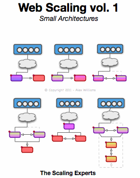

Volume 1, Small Architectures:
Scaling from 1 server with the desire to separate functions onto different servers and provide some basic failover. This eBook is for architectures of 2 to 4 servers within the same datacenter.
- Scale your architecture
- Use Open Source Software to reduce costs
- Failure scenarios
- Code samples
- Tips from industry experts
- Designs with load-balancing and failover
- Web architectures from 2 to 4 servers
Download Web Scaling vol. 1 – FREE!
What's next?:
- See our new project: jidoteki.com